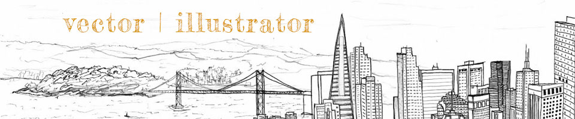
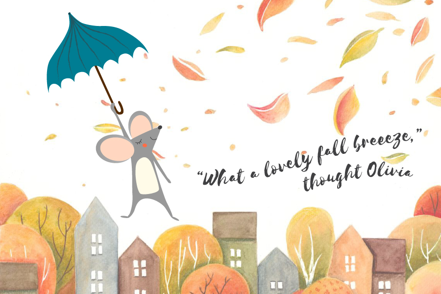

I had a lot of fun creating a character for the vector project. Again, I chose a “whimsical” theme, this time with a little mouse I named Olivia who is flying over town using the wind and her blue umbrella. I really appreciate how simplistic the illustration style can be, and yet small details can convey so much in the character design. I would definitely be interested in learning more Adobe Illustrator skills to learn how to make more complex vectors and character designs.